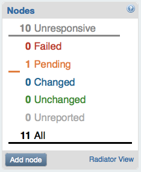
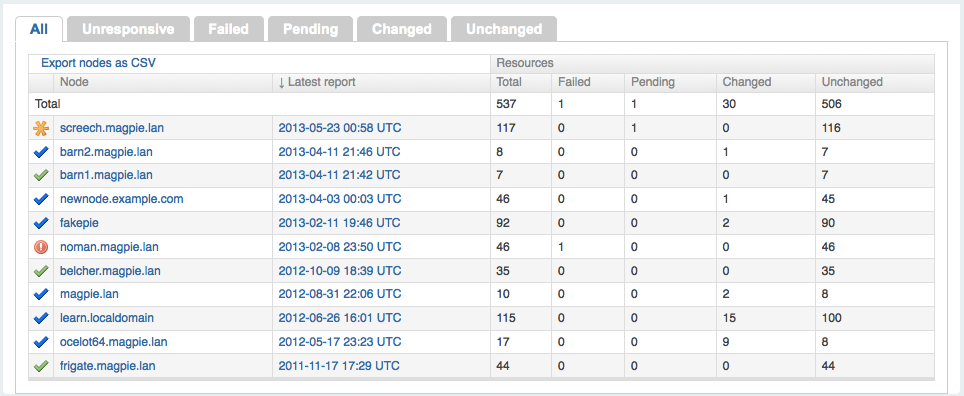
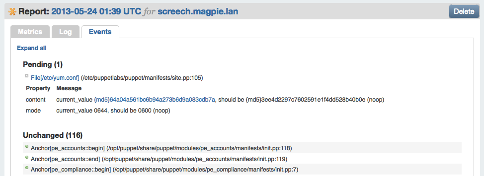
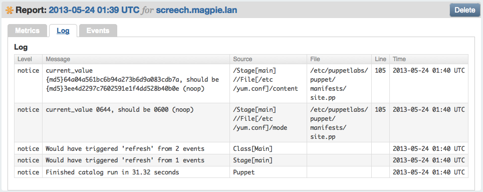
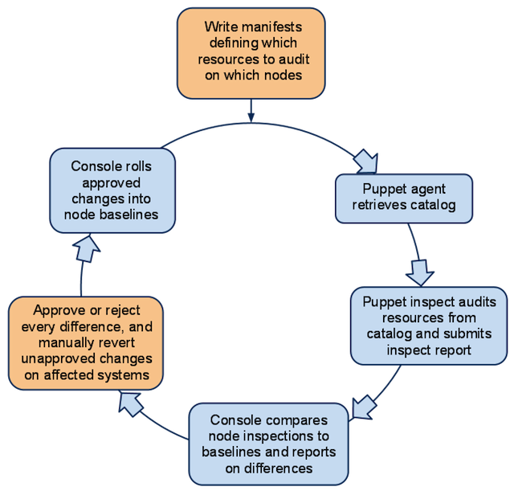
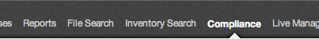
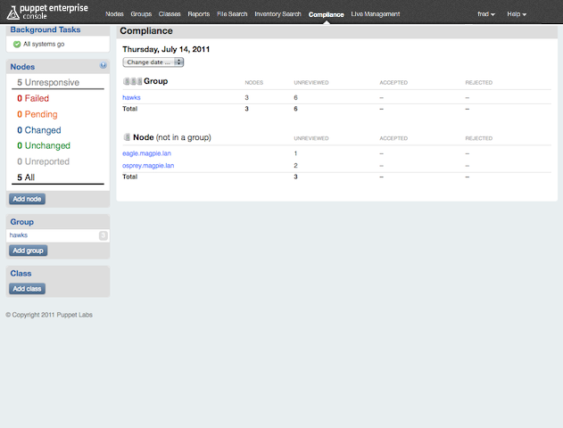
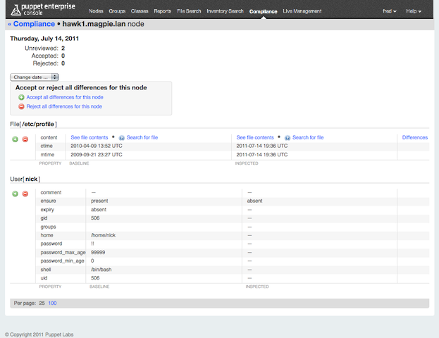
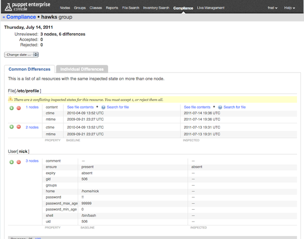
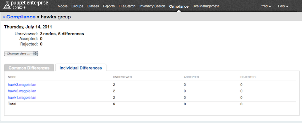

Compliance Basics and UI
Deprecation Notice
IMPORTANT: The compliance workflow tools are deprecated, and will be removed in Puppet Enterprise 3.0. We are continuing to invest in flexible ways to help you predict, detect, and control change, and our next-generation tools will not use manually maintained baselines as a foundation.
If you are using the compliance workflow tools today, you can achieve a similar workflow by using Puppet’s noop features to detect changes.
Alternate Workflow In Brief
- Instead of writing audit manifests: Write manifests that describe the desired baseline state(s). This is identical to writing Puppet manifests to manage systems: you use the resource declaration syntax to describe the desired state of each significant resource.
- Instead of running puppet agent in its default mode: Make it sync the significant resources in noop mode, which can be done for the entire Puppet run, or per-resource. (See below.) This causes Puppet to detect changes and simulate changes, without automatically enforcing the desired state.
- In the console: Look for “pending” events and node status. “Pending” is how the console represents detected differences and simulated changes.
Controlling Your Manifests
As part of a solid change control process, you should be maintaining your Puppet manifests in a version control system like Git. This allows changes to your manifests to be tracked, controlled, and audited.
Noop Features
Puppet resources or catalogs can be marked as “noop” before they are applied by the agent nodes. This means that the user describes a desired state for the resource, and Puppet will detect and report any divergence from this desired state. Puppet will report what should change to bring the resource into the desired state, but it will not make those changes automatically.
To set an individual resource as noop, set the
noopmetaparameter totrue.file {'/etc/sudoers': owner => root, group => root, mode => 0600, noop => true, }This allows you to mix enforced resources and noop resources in the same Puppet run.
To do an entire Puppet run in noop, set the
noopsetting totrue. This can be done in the[agent]block of puppet.conf, or as a--noopcommand-line flag. If you are running puppet agent in the default daemon mode, you would set noop in puppet.conf.In the Console
In the console, you can locate the changes Puppet has detected by looking for “pending” nodes, reports, and events. A “pending” status means Puppet has detected a change and simulated a fix, but has not automatically managed the resource.
You can find a pending status in the following places:
- The node summary, which lists the number of nodes that have had changes detected:

- The list of recent reports, which uses an orange asterisk to show reports with changes detected:

- The log and events tabs of any report containing pending events; these tabs will show you what changes were detected, and how they differ from the desired system state described in your manifests:


After Detection
When a Puppet node reports noop events, this means someone has made changes to a noop resource that has a desired state desribed. Generally, this either means an unauthorized change has been made, or an authorized change was made but the manifests have not yet been updated to contain the change. You will need to either:
- Revert the system to the desired state (possibly by running puppet agent with
--no-noop).- Edit your manifests to contain the new desired state, and check the changed manifests into version control.
Before Detection
However, your admins should generally be changing the manifests before making authorized changes. This serves as documentation of the change’s approval.
Summary
In this alternate workflow, you are essentially still maintaining baselines of your systems’ desired states. However, instead of maintaining an abstract baseline by approving changes in the console, you are maintaining concrete baselines in readable Puppet code, which can be audited via version control records.
The Compliance Workflow Cycle
PE’s compliance workflow is designed to audit changes in systems that are managed manually. It can also audit changes to resources being actively managed by Puppet.

- A sysadmin writes manifests that define which resources to audit on which nodes.
- Puppet agent retrieves and caches a catalog compiled from those manifests.
- Puppet inspect reads that catalog to discover which resources to audit, then submits an inspect report.
- The console analyzes inspect reports, then calculates a daily report of differences between the inspected system state and the approved baseline state. (Or, if this is the node’s first inspect report, it will create an initial baseline for it.)
- A sysadmin uses the console’s compliance pages to approve or reject every difference, then manually reverts any unapproved changes as necessary.
- The console then modifies the baseline to include any approved changes, and awaits the next day’s inspect reports.
Concepts
Auditing
When using this workflow, Puppet audits the state of resources, rather than enforcing a desired state; it does not make changes to any audited resources. Instead, changes are to be made manually (or by some out-of-band process) and reviewed for approval after the fact.
After changes have been reviewed in the console, any approved changes will be considered the baseline state in future reports. Rejected changes will continue to be reported as non-baseline states until they are reverted manually on the affected machines.
Resources and Attributes
Any native Puppet resource type can be used in the baseline compliance workflow. As with similar compliance products, you can audit the content and metadata of files, but you can also audit user accounts, services, cron jobs, and anything for which a custom native type can be written.
Resources are audited by attribute — you can choose one or more attributes you wish to audit, or audit all attributes of that resource.
Compliance Manifests
The set of resources to audit is declared in standard Puppet manifests on the master and retrieved as a catalog by the agent. Instead of (or in addition to) declaring the desired state of a resource, these manifests should declare the audit metaparameter.
Inspect Reports
Each node being audited will routinely report the states of its audited resources. The documents it sends are called inspect reports and differ from standard Puppet reports.
By default, every PE agent node sends daily inspect reports, regardless of whether it is auditing any resources.
Baselines
Conceptually, a baseline is a blessed inspect report for a single node: it lists the approved states for every audited resource on that node. Each node is associated with one and only one baseline and nodes cannot share baselines. However, nodes with similar baselines can be grouped for convenience.
Baselines are maintained by the console. They change over time as administrators approve changes to audited resources. Nodes reporting for the first time are assumed to be in a compliant state and their first inspect report will become the baseline against which future changes are compared.
Groups
Although nodes cannot share baselines, nodes in groups can have similar changes approved or rejected in bulk.
The Console’s Compliance UI
Puppet’s compliance UI appears in the console. The compliance module adds the following new elements:
- A summary and custom report control on each group’s page
- A set of dedicated compliance pages, accessible from the “Compliance” link in the console’s main header menu

Each of these pages shows compliance information for a single day and contains a date changer drop-down for changing the view. The most recently selected date will persist while you navigate these pages.

New Controls on Group Pages

Each group page will now have:
- A compliance summary in its node information section
- A control for generating custom reports

Compliance Overview

The main compliance overview page shows a single day’s comparison results, with aggregate summaries for grouped nodes and individual summaries for groupless nodes.
Compliance Node Page

Individual node pages show one node’s off-baseline inspection results for a single day. You can accept or reject changes from this page.
Links to the node pages of ungrouped nodes are displayed on the main compliance overview page. To see the details of a node which is in at least one group, navigate to its group page and use the “Individual Differences” tab.
Compliance Group Page


Compliance group pages show the collected differences for a group of nodes. Two tabs are available:
- Use the “Common Differences” tab to approve and reject aggregate changes in bulk
- Use the “Individual Differences” tab to access node pages and act individually
Groups are one of the console’s core constructs, and nodes can be added to or removed from groups in the console’s main node pages.
Although the console allows groups to contain other groups, a compliance group page will only list nodes that are direct children of that group.